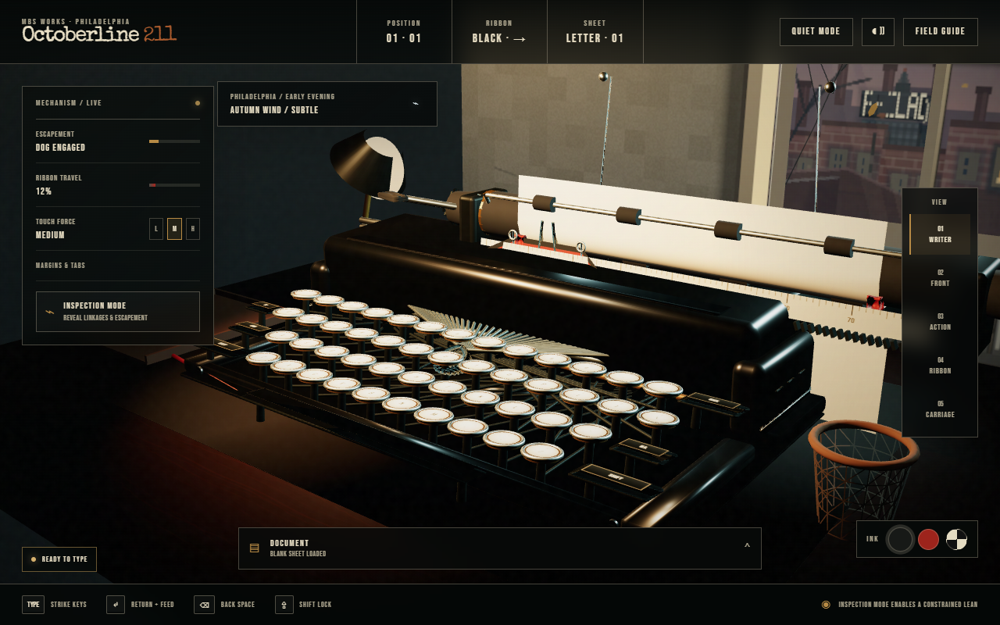

Stillness first
Only one small environmental cue occurs at a time. The typewriter remains the visual anchor.
A working identity for a mechanical writing room
Carbon Mark and The Quiet Desk at Dusk are approved and now implemented in the live simulator. This page remains the decision record for the rebuilt window, Philadelphia landmark, and entry composition.
Identity candidates
Approved homepage
Revision 03 adds a procedural PECO Building and scrolling Crown Lights behind the layered rowhouses, sash, glass, weather, branches, and leaves. The finished page remains live 3D.

A mechanical writing experience built one key, bell, ribbon, and carriage at a time.
Only one small environmental cue occurs at a time. The typewriter remains the visual anchor.
Hovering or focusing the main action lowers one physical key before the camera glides forward.
Reduced-motion mode becomes a static dusk composition with one short opacity crossfade.
Approval gate
Approved and implemented. The live entry now uses the Carbon Mark, animated PECO Crown Lights, responsive desk composition, silent key preview, and direct Front-view transition shown by this review.